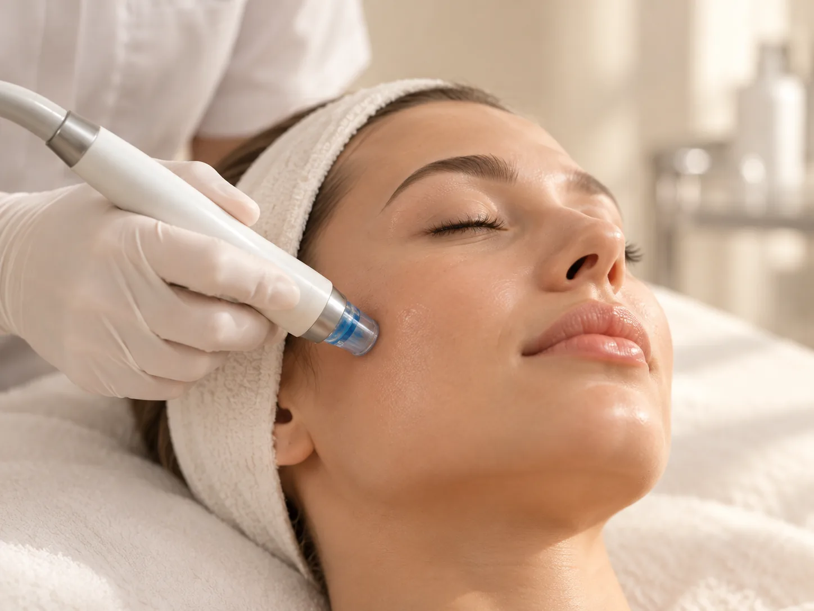

Кожа и внешность
HydraFacial
Аппаратное очищение, пилинг и увлажнение кожи за одну процедуру.
Программу HydraFacial подбирают по задаче: глубокое очищение, сухая кожа, проблемная кожа, пигментация, программа для мужчин и для спины.
- Стоимость
- от 4 200 ₽
- Программы
- для лица, для мужчин, для спины

Кому подходит
HydraFacial — аппаратная процедура: кожу очищают, мягко отшелушивают и насыщают сыворотками. Её делают в клинике 8.0.8 в Москве, у метро «Римская». Записаться можно ежедневно с 9:00 до 21:00.
HydraFacial выбирают для регулярного ухода, перед важным событием, при расширенных порах, чёрных точках, тусклой и обезвоженной коже. Процедуру часто называют гидропилингом, аквапилингом или вакуумной чисткой лица.
Есть отдельные программы для проблемной кожи, при пигментации, для мужчин и для спины. Программу подбирают по задаче и состоянию кожи.
Программы HydraFacial и цены
- Глубокое очищениеБазовая программа — 7 200 ₽.
- Сухая обезвоженная кожа7 800 ₽.
- Сияние кожи «на выход»Базовая программа и сыворотка с витамином С — 8 200 ₽.
- ПигментацияБазовая программа и сыворотка с витамином С — 8 200 ₽.
- Проблемная кожаДва варианта программы, в том числе базовая программа с пилингом — 8 300 ₽.
- Для мужчин8 300 ₽.
- Спина14 000 ₽.
- Алмазная дермабразияМикродермабразия: отшелушивание кожи насадкой с алмазным напылением — 4 200 ₽.
Как проходит процедура
- Оценка кожиЗадача, противопоказания и выбор программы.
- Очищение и пилингАппаратное очищение и мягкое отшелушивание.
- Очищение порЗагрязнения и кожное сало удаляются вакуумом.
- СывороткиНасыщение кожи по программе.
- РекомендацииДомашний уход и когда повторить процедуру.
Как подготовиться к процедуре
- Не загоратьЗа несколько дней до процедуры не загорайте на солнце и в солярии.
- Пауза в домашнем уходеЗа 2–3 дня отмените скрабы, домашние пилинги и средства с ретиноидами.
- Рассказать о лекарствахОсобенно о препаратах изотретиноина и средствах для кожи по назначению врача.
- Перенести при обостренииЕсли на лице герпес, ранки или сильное раздражение, процедуру лучше перенести.
После процедуры
Специалист расскажет:
- как часто повторять процедуру
- какой домашний уход подходит вашей коже
- когда можно наносить макияж и ходить в баню или бассейн
- как защищать кожу от солнца
Что такое HydraFacial и как он работает
HydraFacial — название аппарата и процедуры для ухода за кожей. Аппарат работает специальными насадками: они одновременно подают на кожу раствор и вакуумом собирают его вместе с отшелушенными клетками и содержимым пор. Поэтому процедуру называют вакуумным гидропилингом.
Процедура проходит в несколько этапов. Сначала кожу очищают и мягко отшелушивают, затем раствором с кислотами размягчают загрязнения в порах и удаляют их вакуумом. В конце кожу насыщают сыворотками: увлажняющими или с витамином С, в зависимости от программы.
Кожа после процедуры обычно не требует долгого восстановления: выраженного покраснения и шелушения, как после механической чистки или пилинга средней глубины, как правило, нет. Сколько держится эффект, зависит от состояния кожи и домашнего ухода, поэтому HydraFacial часто делают курсом или регулярно для поддержания.
HydraFacial или чистка лица: в чём разница
Обе процедуры очищают поры, но по-разному. На чистке лица комедоны удаляют ультразвуком или вручную. HydraFacial очищает кожу аппаратом: раствором и вакуумом, а в конце ещё и увлажняет сыворотками.
- HydraFacialМягче, без выраженных следов на коже. Сочетает очищение, пилинг и увлажнение. Подходит для регулярного ухода и перед событием.
- Механическая чисткаУбирает более глубокие и плотные комедоны. После неё кожа может быть красной несколько часов или дней.
- Ультразвуковая чисткаМягкое поверхностное очищение, дешевле HydraFacial.
Если комедонов много и они плотные, специалист может предложить сначала чистку лица, а HydraFacial оставить для поддерживающего ухода. Если высыпания воспалённые и возвращаются, начать лучше с приёма врача-косметолога.
Кому подходит и противопоказания
HydraFacial подходит для разных типов кожи: жирной и комбинированной с расширенными порами, сухой и обезвоженной, тусклой. Есть отдельная программа для мужчин и программа для спины. Процедуру выбирают и как самостоятельный уход, и как подготовку кожи к другим процедурам.
Перед процедурой специалист проверит противопоказания. Общепринятые из них:
- Воспаление в зоне процедурыАктивные гнойные высыпания, герпес, ранки, раздражение кожи.
- Обострение заболеваний кожиНапример, розацеа или дерматита в стадии обострения.
- Свежий загарИли ожог кожи.
- АллергияНа компоненты растворов и сывороток.
- Беременность и грудное вскармливаниеРешение принимает врач.
- Обострение хронических заболеванийИ повышенная температура.
Полный список противопоказаний уточнит врач на консультации.
Вопросы
Сколько стоит HydraFacial?
От 4 200 ₽ (алмазная дермабразия) до 8 300 ₽ за программу для лица: глубокое очищение — 7 200 ₽, для сухой кожи — 7 800 ₽, сияние кожи и пигментация — 8 200 ₽. Программа для спины — 14 000 ₽.
Как записаться на HydraFacial?
По телефону +7 (995) 656-33-96, ежедневно с 9:00 до 21:00.
Где сделать HydraFacial в Москве?
В клинике 8.0.8: ул. Сергия Радонежского, 15–17, стр. 2, этаж 1. Рядом станции метро «Римская» и «Площадь Ильича».
HydraFacial и гидропилинг — одно и то же?
HydraFacial — конкретный аппарат и процедура. Гидропилингом и аквапилингом обычно называют похожие процедуры, где кожу очищают раствором и вакуумом.
Чем HydraFacial отличается от чистки лица?
HydraFacial — аппаратная процедура, которая сочетает очищение, пилинг и увлажнение. Ручная чистка убирает более глубокие загрязнения.
Как часто можно делать HydraFacial?
Частоту подскажет специалист по состоянию кожи. Для поддерживающего ухода процедуру часто повторяют примерно раз в месяц.
Можно ли сделать HydraFacial перед важным событием?
Да, для этого есть программа «Сияние кожи». Если делаете процедуру впервые, лучше за несколько дней до события, чтобы знать, как реагирует кожа.
Подходит ли HydraFacial чувствительной коже?
Процедура считается мягкой, но при розацеа, куперозе и раздражении решение принимает врач после осмотра.
Что чувствуешь во время процедуры?
Обычно процедура комфортная: ощущается прохладный раствор и лёгкое втягивание кожи насадкой.
Есть ли программа для мужчин?
Да, программа HydraFacial для мужчин — 8 300 ₽. Есть и отдельная программа для спины — 14 000 ₽.
Как добраться
- АдресМосква, ул. Сергия Радонежского, 15–17, стр. 2, этаж 1
- Метро«Римская» и «Площадь Ильича»
- Часы работыЕжедневно с 9:00 до 21:00
- Телефон+7 (995) 656-33-96


Имеются противопоказания. Необходима консультация специалиста.